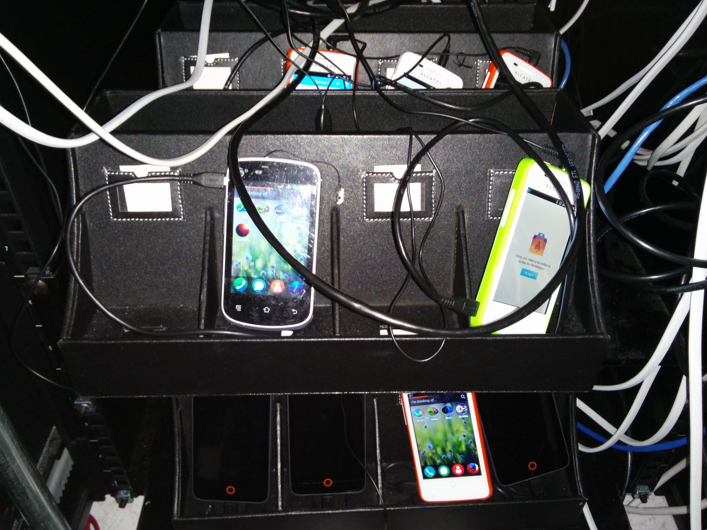
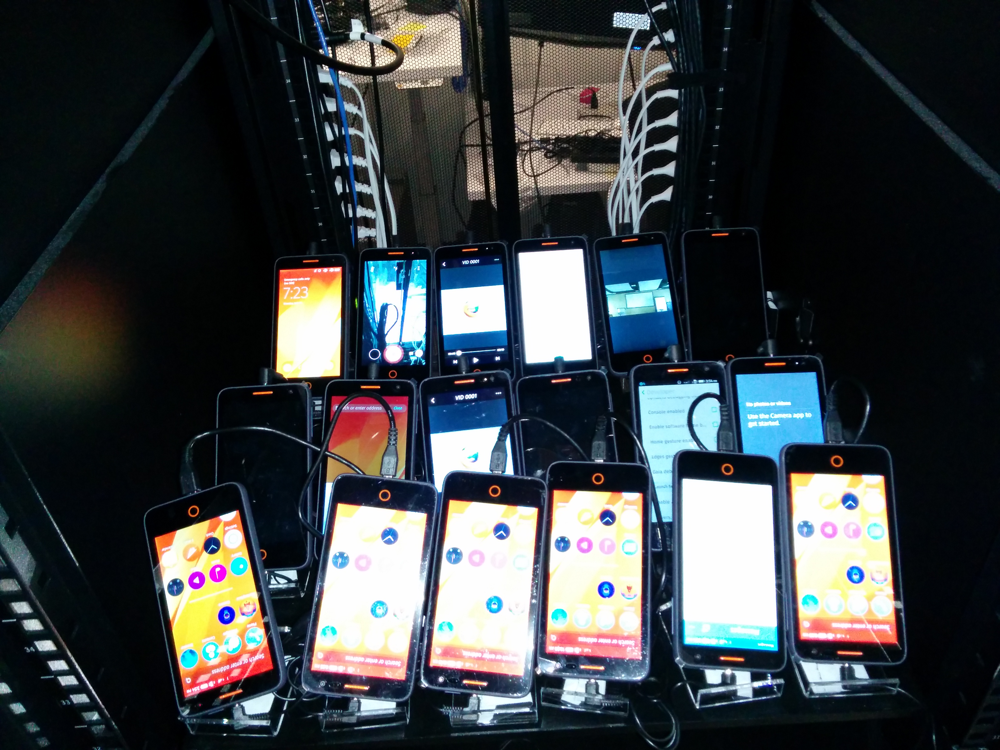

#(・ヘ・)
#What'd I learn?
Note:
I learned:
- There aren't any stupid questions. Don't be afraid to ask on IRC. People just want to help! I inherently have anxiety online, and I was originally intimidated to ask questions that I thought might be too basic, but that's the whole point of the internship right?
- Take a lot of opinions on the way. Getting reviews incrementally can let you do things right the first time.
- One and Done. Get all the info you need so you can do a task and not need to revisit it.


##[≡]〆(・∀・＠)
#Q&A
# \#interns
Note:
##Dashboard
- Currently caches dictionaries used for visualization and shelves file
- Will implement database
- Would redo with angular rather than jquery, but libraries.
- Want to add devices to data too, but more scraping
- Quick lookup test health.
##Lab
- Made a script to standardize setup
- Puppet and other options are being looked into.
- Network install took too long to setup with deadline
##Testing
- Handled some issues, but mostly Jenkins and bugzilla
## ＼（＠￣∇￣＠）／
#Thanks Mozilla!